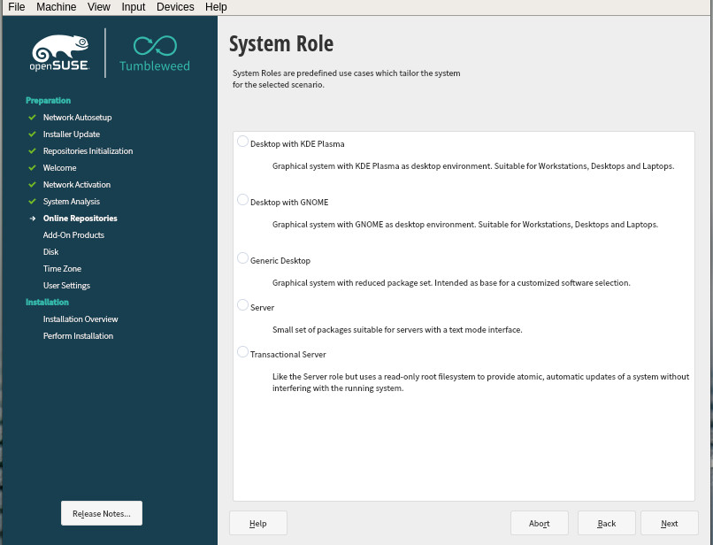
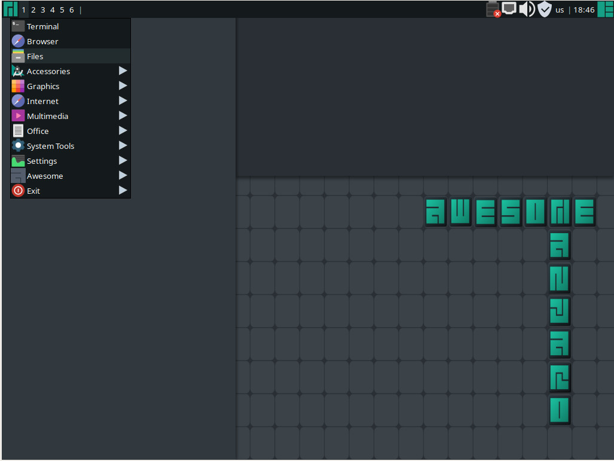
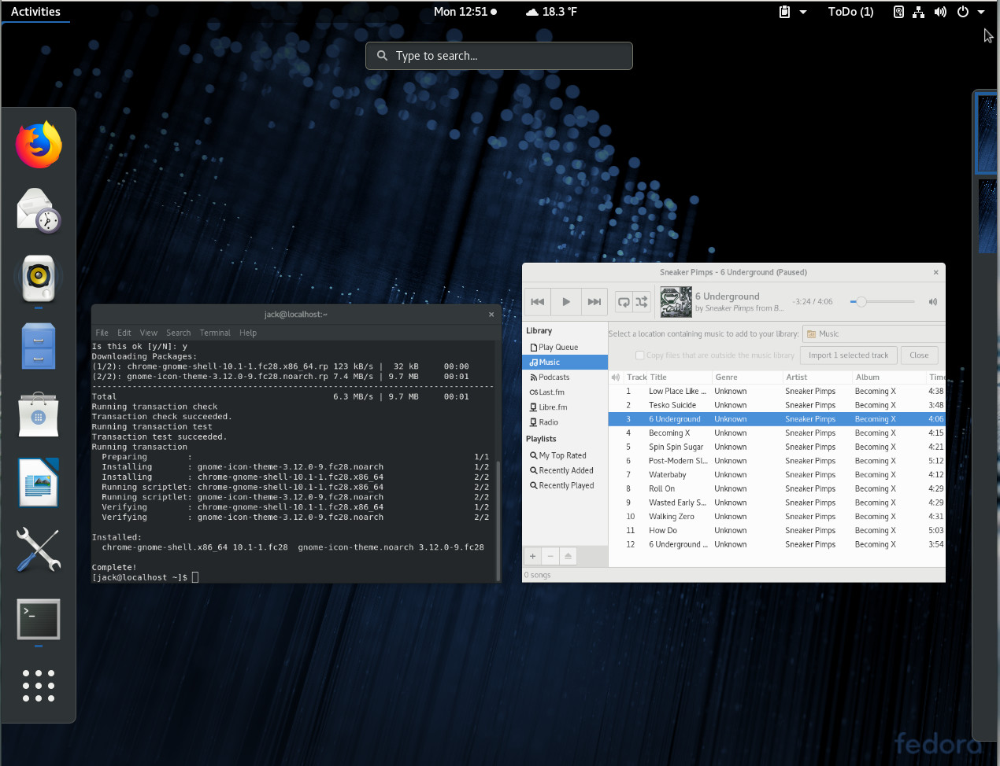
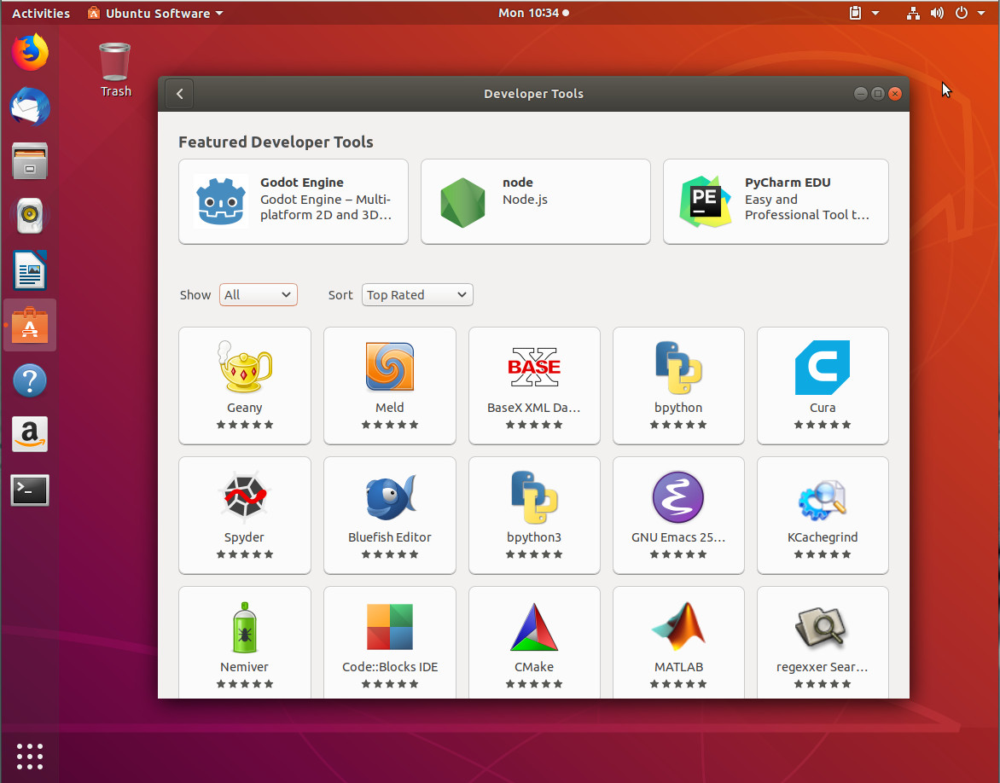

When launching a terminal, you are interacting with a shell program from the command-line. Most distribution define bash as the default shell, while some have the minimal ash, or sh as the default shell. There is another 3rd popular shell: zsh.
The basic sh program lacks the rich features of modern shells such as: command completion file-name completion command-history and many more.
Other shells were popular back in the day, among the prominent one were tsh and its derivative tcsh, which were pioneers in many advance features of command-line interactive editing, such as command and file-name or history completion and many others. While proving to be very influential in many aspects of shell innovation, especially the interactive aspects, it was strongly criticized in Csh Programming Considered Harmful for its occasional parsing errors and random bugs. File descriptor handling and other advanced features were lacking.